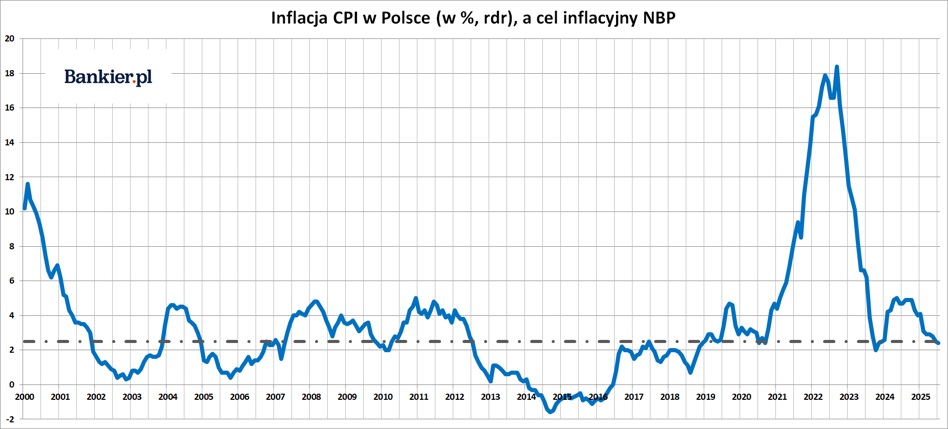
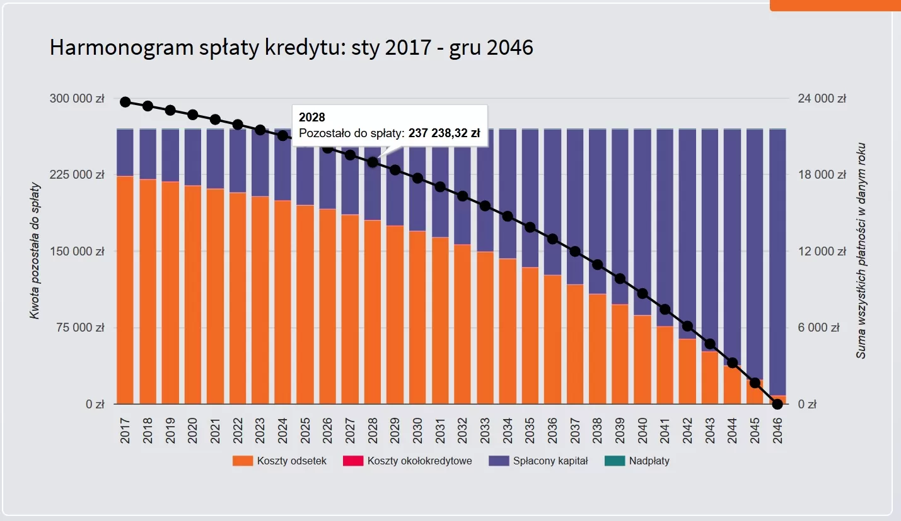
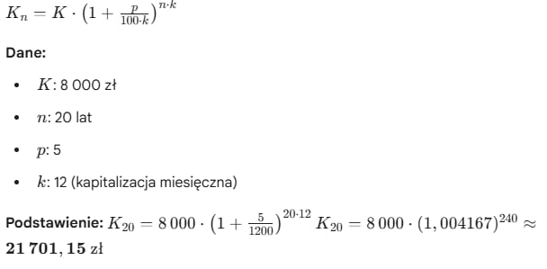
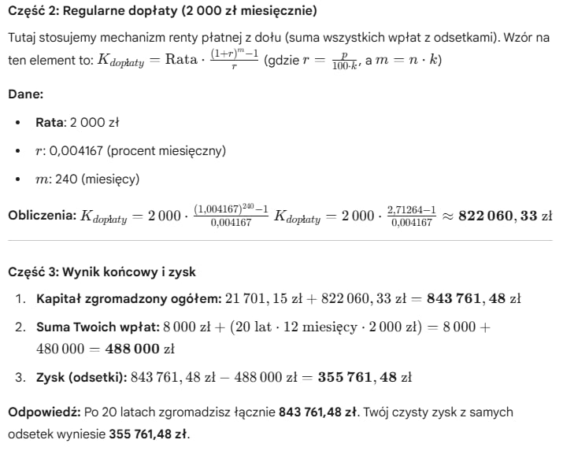

Inflacja, porównywanie i symulacje
Zobacz, jak niewidzialne procesy rynkowe wpływają na Twoją siłę nabywczą.
Inflacja - niewidzialny złodziej pieniędzy
Czym jest inflacja?
Inflacja - proces trwałego wzrostu ogólnego poziomu cen w gospodarce. Skutkiem tego procesu jest spadek siły nabywczej pieniądza krajowego. Zjawiskiem przeciwnym jest deflacja.
Jak inflacja wpływa na oszczędności?
Inflacja zmniejsza wartość i siłę nabywczą oszczędności, ponieważ za tę samą kwotę można kupić coraz mniej produktów. Pieniądze „topnieją”, zwłaszcza te trzymane w gotówce lub na nisko oprocentowanych kontach.
Zadanie: "Ucieczka przed inflacją" Wyobraź sobie, że masz 20 000 zł (Twój kapitał początkowy). Postanawiasz trzymać te pieniądze w przysłowiowej "skarpecie" przez 5 lat. Średnioroczna inflacja w tym okresie wynosi 5%. Pytanie: Ile będą warte Twoje pieniądze po 5 latach?

Realna wartość pieniądza
Siła nabywcza pieniądza - określa, ile dóbr i usług można nabyć za jednostkę pieniądza. Jeśli występuje wzrost cen przy braku zmiany dochodów, siła nabywcza pieniądza zmniejsza się.
Przykłady "zjadania" oszczędności
To sytuacja, gdy wydajesz zgromadzone pieniądze na nieplanowane potrzeby. Przykłady to drogi transport zamiast roweru, rezygnacja z własnych posiłków na rzecz gastronomii czy kupowanie zbędnych nowości.
Porównanie: trzymanie gotówki VS inwestowanie
Trzymanie gotówki zapewnia bezpieczeństwo i płynność, ale traci na wartości przez inflację. Inwestowanie pozwala pomnażać kapitał w długim terminie i chronić go, budując większy majątek.
Porównywanie ofert finansowych
Jak czytać reklamy banków?
Skup się na ukrytych informacjach: analizuj RRSO, szukaj reprezentatywnego przykładu, czytaj drobny druk z zastrzeżeniami i weryfikuj, czy oferta spełnia Twoje realne potrzeby.
Reklama przyciągnęła wzrok?
Porównywanie RRSO
To najlepszy sposób na ocenę kosztu kredytu, bo uwzględnia odsetki i opłaty. Porównuj oferty o tej samej kwocie i okresie spłaty. Pamiętaj: niższe RRSO oznacza zazwyczaj tańszy kredyt.
Znaczenie skali czasu
Kluczowe dla efektywności i strategii. Pozwala na proaktywne działanie zamiast ciągłego "gaszenia pożarów" dzięki planowaniu w perspektywie krótko i długoterminowej.
Dlaczego małe różnice procentowe robią wielką różnicę?
Małe zmiany (np. 1-2%) kumulują się w czasie (procent składany), prowadząc do znaczących efektów w długim okresie i decydując o ostatecznym sukcesie lub porażce finansowej.
Symulacje finansowe
Symulacja kredytu w czasie
Proces obliczania harmonogramu spłat rat, który pomaga przewidzieć wpływ nadpłat czy zmian oprocentowania na budżet domowy w perspektywie lat.
Symulacja oszczędzania
Odkładając 1000 zł miesięcznie przy kapitale 10 000 zł i 6% oprocentowaniu, po 10 latach zgromadzisz ok. 177 500 zł. Dzięki magii procentu składanego zyskasz aż 47 500 zł z samych odsetek.
Zadanie: Oblicz zysk po 20 latach odkładając 2000 zł miesięcznie przy kapitale 8 000 zł i oprocentowaniu 5%.
 Wpływ zmiany parametrów
Zmiana parametrów oznacza zmianę sytuacji - możliwość straty środków, lecz także ich zyskania w zależności od podjętych decyzji.
Wnioski matematyczne
Obejmują optymalizację zasobów, przewidywanie trendów, zarządzanie ryzykiem, segmentację oraz skalowalność dzięki algorytmom.